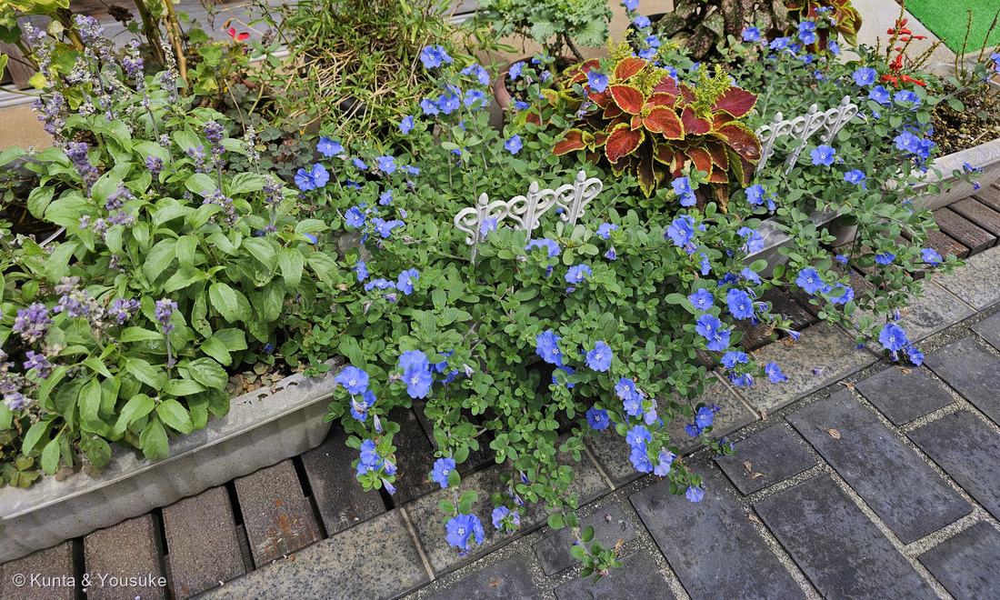
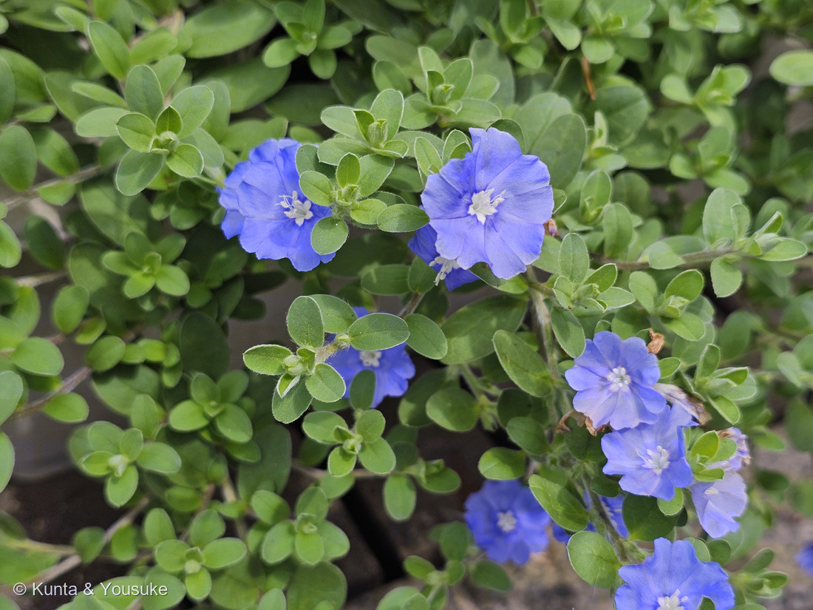
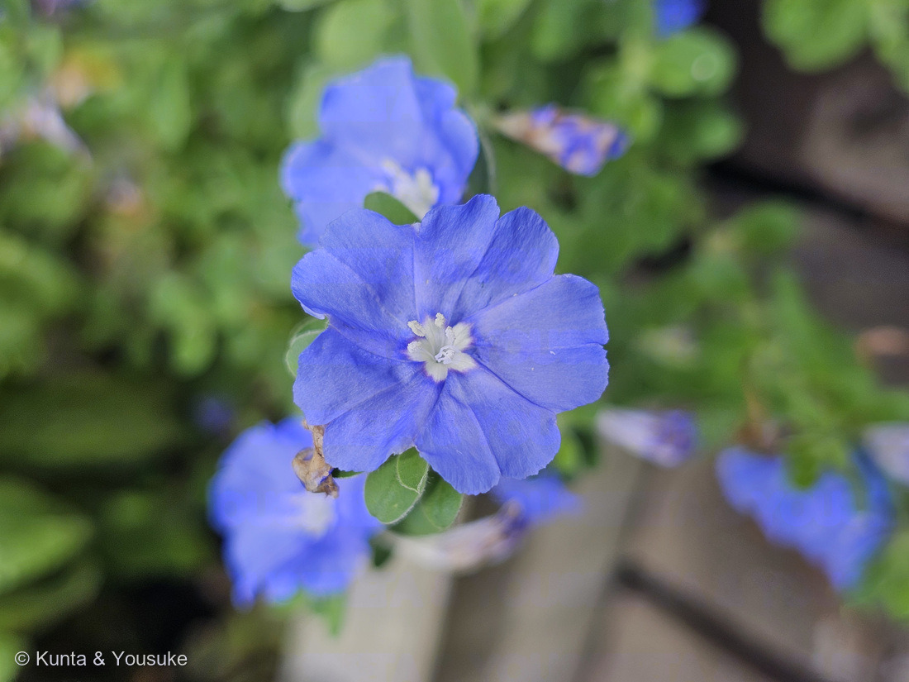
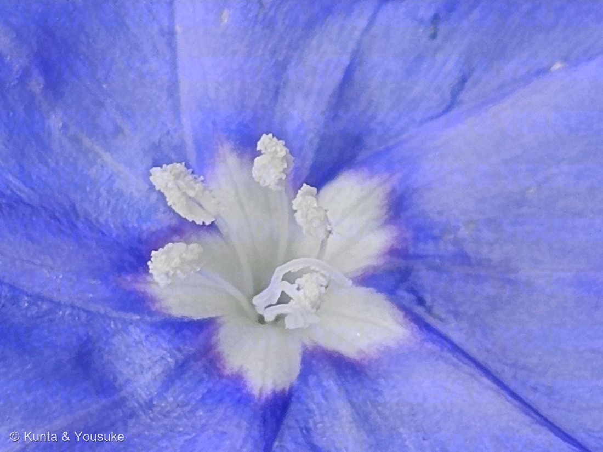
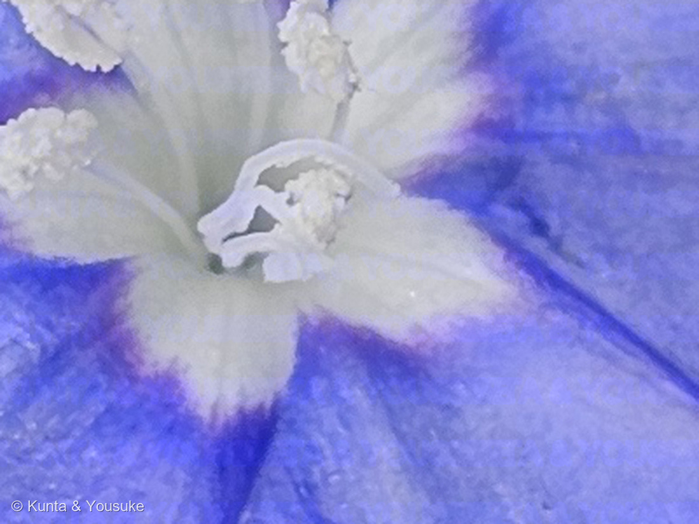

地図を読み込んでいるよ…
🔍 写真も地図も、押しているあいだ拡大して見られるよ（スマホは指を置いてすこし待ってね）。
🌍 の地図＝この子がもともと自生している場所を緑に。熱帯南アメリカ（ブラジル）。⚠日本では鉢や花壇で育てられているだけで、野生のこの子はいないよ。⚠⚠そして学名がゆれているぶん、ふるさとの説も割れている＝Evolvulus nuttallianus だとすれば北アメリカ（アメリカ合衆国の中部）になる。
⚠⚠この緑は、学名がゆれているぶんだけ広く塗ってある＝本命の Evolvulus glomeratus ならブラジル（熱帯南アメリカ）だけ／三河の植物観察が挙げる E. nuttallianus ならアメリカ合衆国の中部になる＝⭐どちらか決めきれないので、両方を塗った（⭐306 オオガタホウケンで決めた「割れていたらどちらも消さずに書く」のとおりだよ）。⚠⚠そして、この緑はほんとうよりずっと広く見えている＝地図は国までしか塗れないので、ブラジルもアメリカも国ぜんたいが緑になってしまうから。⚠日本は塗っていない＝鉢や花壇で育てられているだけで、野生のこの子はいないよ。⭐⭐⭐おまけのアサガオガラクサは、この緑には出てこない＝同じエボルブルス属なのに、あちらは沖縄島・石垣島・西表島に自生している＝⭐属ぜんたいは約100種で、おもに南北アメリカ。そのはしっこが、日本の南の島まで届いているんだね。
⚠ 地図は国（日本と中国だけ県・省）までしか塗れないから、ほんとうの分布より広く見えていることがあるよ。地図はだいたいの場所。正確なところは、上の文を見てね。
アメリカンブルー（エボルブルス）
Evolvulus glomeratus Nees & Mart.
別名 エボルブルス · ブルーデイズ（'Blue Daze'） · 英名 Brazilian dwarf morning-glory（ブラジルの小人アサガオ） · Hawaiian blue eyes
ヒルガオ科 · Convolvulaceae（エボルブルス属＝アサガオガラクサ属 Evolvulus · ナス目 Solanales）── ⭐ヒルガオ科は、この子を入れて図鑑に6人（005 ヒルガオ・012 アサガオ・106 マメアサガオ・280 マルバルコウ・299 アサガオ）／⭐⭐⭐でも、つるにならないのはこの子だけ
燻太さんの言葉「葉っぱは楕円や卵型って感じで産毛が生えていて、花は合弁の放射対称で5軸。小さいアサガオみたい。でも、こういう作りの花は他にもたくさんあるよね。どこが決め手になるのかな？」── ⭐⭐⭐答えは「めしべ」だったよ
⭐⭐⭐⭐⭐ 燻太さんの問い ── 「こういう作りの花は他にもたくさんある。どこが決め手になるのかな？」
⭐⭐⭐ まず、燻太さんの見立てはぜんぶ当たっている
- 葉が楕円〜卵形で産毛＝⭐NC State Extension は 'Blue Daze' の葉を「卵形〜楕円形〜披針形、長さ約2.5cm、幅約1.3cm」「灰色がかった綿毛におおわれる」とする。⭐三河の植物観察も「両面に軟毛が密生」。
- 合弁・放射相称・5数性＝⭐そのとおり。
- ⭐⭐⭐そして「小さいアサガオみたい」も、当たっている。──この子はヒルガオ科。⭐012 アサガオと同じ科なんだ。⭐⭐英名も Brazilian dwarf morning-glory（ブラジルの小人アサガオ）。
- ⭐⭐⭐⭐しかも、ふるまいまでアサガオだった。──この子の花は一日花で、⭐夜と、曇りの日には閉じる（NC State Extension）。⏳これは宿題にしたよ。
⭐⭐⭐⭐ 決め手① 科は「花びらの裂けかた」で決まる ── 曜（よう）
- ⭐⭐⭐ヒルガオ科の花冠は、花びらが完全にくっついて1枚の漏斗になっている。──だから縁は浅い5つの山になるだけで、深くは裂けない。
- ⭐⭐⭐⭐そのかわり、花びらの合わせ目が5本の筋になって、喉から縁まで放射状に走る。⭐三河の植物観察はヒルガオ属を「5本の目立つ花弁中央の帯をもつ」と書く。
- ⭐⭐この筋、アサガオでは「曜（よう）」と呼ばれるよ。⭐日本語版Wikipediaもアサガオガラクサを「中心や曜は白く抜ける」と書いている。
- ⭐写真③④を見て。──白い喉から、濃い青の筋が5本、まっすぐ出ている。
- ⚠⚠ここが、ほかの科と分かれるところ。──キキョウ科・ナス科・ムラサキ科の花は、ふつう花冠がはっきり5つに裂ける。⭐ヒルガオ科は裂けずに、筋が入る。
⭐⭐⭐⭐⭐ 決め手② 属は「めしべの本数」で決まる
⭐⭐ここが、この回のいちばん面白いところだった。
- ヒルガオ属 Calystegia（005 ヒルガオ）＝花柱は1個、柱頭は2個でこん棒形、茎はつる
- アサガオ属 Ipomoea（106 マメアサガオ・280 マルバルコウ・299 アサガオ）＝花柱は1個、茎はつる
- ⭐⭐⭐エボルブルス属 Evolvulus（この子）＝⭐⭐花柱は2個、それぞれ2裂して柱頭は糸状で計4本、そして巻かない
- ⭐⭐⭐三河の植物観察は、この子の花柱をこう書く。「花柱は2個、糸状、分離又は基部で融着」「それぞれ2裂」──柱頭は「糸状、円柱形又はわずかに棍棒形」。
- ⭐⭐⭐⭐⭐写真⑤の、あのからまった細い白い糸がそれだよ。──⭐葯（ざらざらした粒つきの棍棒）とは、質感がまったくちがう。
- ⭐⭐そして、これは属の特徴。──同じ属のアサガオガラクサも「花柱は2個、糸状、それぞれ2裂」。⭐2種で同じなら、属の性質だと言える。
⭐⭐⭐⭐⭐ 決め手③ 名前そのものが答えを言っている ── 「巻かない」
- ⭐⭐⭐属名の Evolvulus は、ラテン語の「to unroll（巻きをほどく）」から。──つるにならないという、この属の性質から付いた名前だよ（英語版Wikipedia）。
- ⭐⭐⭐⭐⭐そして科の名前、ヒルガオ科 Convolvulaceae は Convolvulus から。──そちらは「巻きつく茎」を映した名前。
- ⭐⭐⭐つまり、「巻きつく科」の中にいる「巻かない属」。⭐名前が、まるで反対語になっているんだ。
- ⭐⭐⭐⭐図鑑で確かめられるよ。──ヒルガオ科は、この子を入れて6人。⭐005 ヒルガオ・012 アサガオ・106 マメアサガオ・280 マルバルコウ・299 アサガオ──⭐⭐⭐この5人は、ぜんぶ つる。⭐巻かないのは、この子だけ。
⭐⭐⭐⭐⭐ だから、燻太さんへの答えはこう
⭐⭐⭐花びらの形では決まらない。決まるのは、めしべの本数と分かれかた。
- 花冠のかたち（合弁・漏斗・曜）＝⭐科まで。
- めしべ（花柱の数）＝⭐⭐属。
- 葉のかたち・大きさ＝⭐種の手がかり。
⭐⭐だから「小さいアサガオみたいだな」と思ったら、つぎは中心をのぞく。⚠そこに答えがあるよ。
⭐⭐⭐ 名前と学名の由来
- ⭐⭐⭐属名 Evolvulus＝ラテン語の「巻きをほどく」。⭐つるにならないことから（上の節へ）。
- ⭐属の和名は「アサガオガラクサ属（朝顔柄草属）」。⭐日本に自生するアサガオガラクサから取られている。
- ⭐流通名の「アメリカンブルー」は、日本でつけられた呼び名。⚠だから海外の図鑑には、この名前では載っていないよ。
- ⭐園芸品種名の「ブルーデイズ（'Blue Daze'）」は、青い花が続く「日々（days）」と、ぼうっとする「daze」をかけた名前だと思う。⚠これはぼくの読みで、出典に書いてあったわけじゃないよ。
- ⭐英名は Brazilian dwarf morning-glory（ブラジルの小人アサガオ）と Hawaiian blue eyes（ハワイの青い瞳）。⚠ふるさとはブラジルなので、ハワイの名は「そこでよく育つ」ということだね。
⭐⭐ この植物のこと
- ヒルガオ科エボルブルス属の多年草（日本では一年草あつかいで売られることが多い）。⭐属ぜんたいでは約100種あって、おもに南北アメリカにいる（英語版Wikipedia）。
- ⭐⭐茎はつるにならず、横に広がってこんもりした山になる。⭐茎が地面につくと、そこから根を出す。⭐高さ23〜45cm、幅60〜90cmくらい。
- ⭐写真①を見て。──植えこみのふちから、石畳のほうへこぼれ落ちている。⭐巻きつく相手をさがさずに、ただ垂れていく。
- 花は青で、喉が白い。⭐一日花で、夜と曇りの日には閉じる。⭐花期は6月から霜がおりるまで。
- ⭐ふるさとは熱帯南アメリカ（ブラジル）。⚠日本では鉢や花壇で育てられているだけで、野生のこの子はいないよ。
⭐⭐⭐⭐ 同定について ── 学名がゆれている
⭐⭐属までは、写真だけでしっかり決まった。⚠でも種になると、出典どうしが食いちがう。
- ⭐ぼくの本命は Evolvulus glomeratus。──理由は葉だよ。
- 三河の植物観察は E. nuttallianus（＝E. pilosus）の葉を「線状長楕円形〜狭い披針形、長さ8〜20mm、幅1.5〜5mm」とする。⚠細長い葉だ。
- ⚠⚠この子の葉は、燻太さんの言うとおり楕円〜卵形で幅が広い。⭐NC State Extension の E. glomeratus 'Blue Daze'（「長さ約2.5cm、幅約1.3cm」）と、こちらのほうがよく合う。
- ⚠⚠⚠でも、三河の植物観察は「Evolvulus pilosus 'Blue Daze' が日本で流通しているアメリカンブルー」と書いている。⭐つまり出典どうしが食いちがっているんだ。
- ⭐⭐GBIF の species/match で引いてみた。
- Evolvulus nuttallianus Roem. & Schult.＝ACCEPTED
- Evolvulus glomeratus Nees & Mart.＝ACCEPTED
- ⚠⚠Evolvulus pilosus＝種として当たらず、科（Convolvulaceae）に落ちた。
- ⭐⭐⭐だから、どちらも消さずに書いた。──⭐306 オオガタホウケンのときに決めた「学名データベースは1つで済ませない／割れていたらどちらも書く」のとおりに。
- ⏳⭐⭐そして、ここは測れば近づく。──三河の E. glomeratus は「花が直径約2.5cm」、NC State の 'Blue Daze' は「約1.3cm」。⚠ここも割れている。⭐ものさしを一本そえてもらえれば、それだけで一歩進むよ。
出典：アメリカンブルーがヒルガオ科（Convolvulaceae）アサガオガラクサ属（Evolvulus）であること・学名 Evolvulus nuttallianus Roem. & Schult.（異名 Evolvulus pilosus Nutt.）・茎が数本、直立〜斜上で高さ10〜15cm、密に開出毛があること・葉が線状長楕円形〜狭い披針形〜狭い倒披針形で長さ8〜20mm、幅1.5〜5mm、両面に軟毛が密生すること・花が直径8〜12mm、紫色〜青色で輻状花冠〜広鐘形であること・花柱が2個、糸状、分離又は基部で融着し、それぞれ2裂すること・柱頭が糸状、円柱形又はわずかに棍棒形であること・萼片が披針形〜狭い披針形で開出する絨毛があること・種子が(1〜)2個で褐色平滑であること・日本での花期が6〜11月であること・「Evolvulus pilosus 'Blue Daze' が日本で流通しているアメリカンブルーである」こと・Evolvulus glomeratus は全体に大形で花が直径約2.5cmと大きいことは三河の植物観察「アメリカンブルー」。ヒルガオ属の花柱が1個で花冠から突き出ないこと・柱頭が2個でこん棒形であること・花冠が漏斗形で「5本の目立つ花弁中央の帯」をもつことは三河の植物観察「ヒルガオ」。Evolvulus glomeratus 'Blue Daze' が熱帯南アメリカ原産であること・つるにならず横に広がり茎が地面につくと根を出すこと・高さ9〜18インチ、幅2〜3フィートになること・葉が卵形〜楕円形〜披針形で長さ約1インチ、幅約0.5インチ、灰色がかった綿毛におおわれること・花が直径約0.5インチで青く中心が白い漏斗形であること・花がふつう夜と曇りの日には閉じること・個々の花が一日しかもたないこと・花期が6月から霜までであること・英名が Blue Daze、Brazilian Dwarf Morning-glory、Hawaiian Blue Eyes であることはNC State Extension Gardener Plant Toolbox「Evolvulus glomeratus」。属名 Evolvulus がラテン語の「to unroll（巻きをほどく）」に由来し、つるにならない性質から名づけられたこと・Convolvulus の名が巻きつく茎を映していること・属が約100種からなり、おもに南北アメリカ原産であること・ヒルガオ科ナス目 Cresseae 連に属すること・茎が巻きつかないことが近縁の多くと分ける特徴であることは英語版Wikipedia「Evolvulus」。おまけのアサガオガラクサ（Evolvulus alsinoides (L.) L.・ヒルガオ科エボルブルス属・地面を匍匐して横に広がり枝先を斜上させる・長さ20〜70cm・葉はほぼ無柄で全縁、灰褐色〜銹色の絹毛がある・花は葉腋や枝先につき淡紫色〜淡青色〜青色で5浅裂し、中心や曜は白く抜ける・花径7〜10mm・蒴果は球形で2〜4mm・分布は沖縄島、石垣島、西表島および付属諸島・マルバアサガオガラクサは環境省絶滅危惧IB類(EN)）は日本語版Wikipedia「アサガオガラクサ」（アサガオガラクサの花柱が2個で糸状、それぞれ2裂することも同じ）。Evolvulus nuttallianus と Evolvulus glomeratus がどちらも ACCEPTED で、Evolvulus pilosus が種として当たらず科に落ちることはGBIF species/match API。⭐「本命は E. glomeratus」という葉からの判断、「'Blue Daze' は days と daze をかけた名前だろう」という読み、そして「花冠は科まで／めしべは属／葉は種の手がかり」という整理は、ぼくのものだよ。